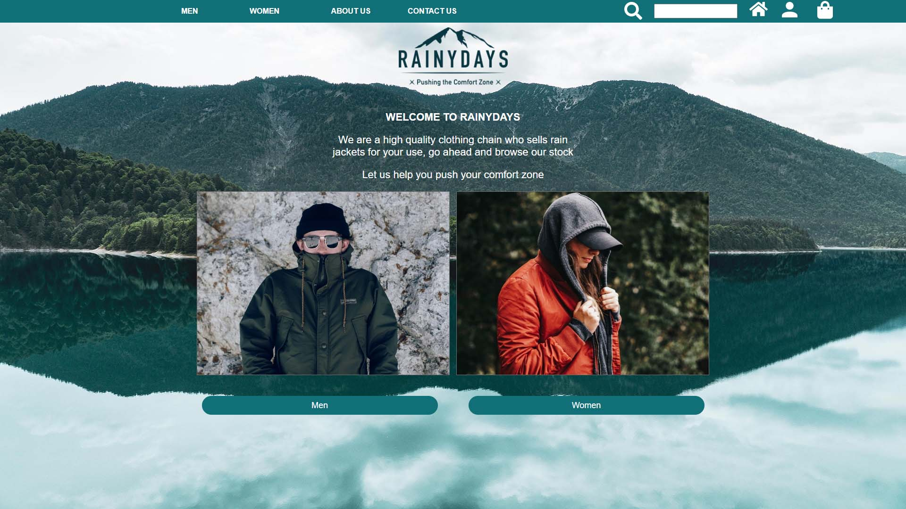

RainyDays Change log

- There is added an global js to have all the global cods in one place such as regex, validation length
check and overlays that comes again in all pages.
- All the buttons was images made in adobe XD and are now changed to be divs with styling and the alt
texts is removed from buttons since thats not needed.
- All products in the store hade a specific page for each item. That is no longer needed since the site is
now dynamicly built, so all the unneeded pages are removed and links and other things that was connected
to them are cleaned up.
- There is added hover effect on images in the store that makes the picture bigger when you mouse over it.
this is added to show the user a better indication that you point at that item.
- The back to top buttons are now using javascript and actually scroll to the top instead of just refresh
the page.
- All the checkbox hackses are removed and now using button onclick in javascript.
- There is added underline in the navigation menu to show the user which page they are on.
- Register forms had a problem that they would appear to the left instead of center in some browsers. That
is now fixed with grid and justify content center.
- The store have now a loader that shows the user that something is happening when the api call is
loading.
- In the shop specific item page, it is now added modal image that shows a bigger picture of the product
and can be closed when clicked outside the picture.
Go back